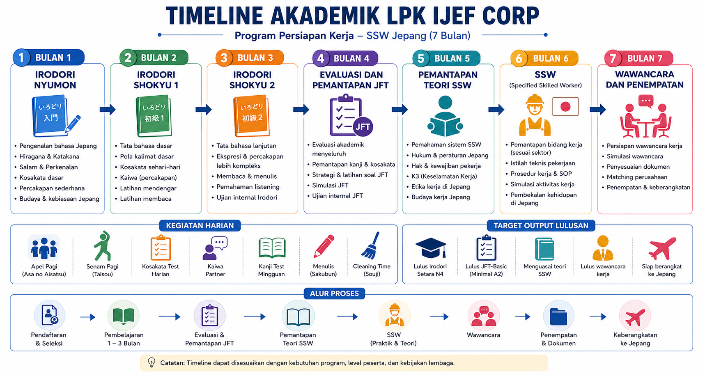

Alur Proses Akademik Siswa
Program Persiapan Kerja SSW Jepang di LPK IJEF Corp dirancang secara sistematis selama 7 bulan. Program ini mencakup pembelajaran bahasa Jepang intensif menggunakan kurikulum Irodori (Nyumon hingga Shokyu 2), evaluasi dan pemantapan JFT, pemantapan teori serta praktik SSW, hingga tahap wawancara kerja dan penempatan ke Jepang.
Bulan 1 - 3: Fondasi Bahasa
Fokus penguasaan materi Irodori Nyumon & Shokyu, kosakata harian, kanji, serta kegiatan harian seperti apel dan senam pagi.
Bulan 4 - 5: Evaluasi & Teori SSW
Pemantapan ujian JFT-Basic serta pendalaman materi dan teori Specified Skilled Worker (SSW) sesuai bidang pekerjaan.
Bulan 6 - 7: SSW & Penempatan
Simulasi wawancara kerja, pencocokan perusahaan (matching job), penyiapan dokumen, hingga keberangkatan ke Jepang.